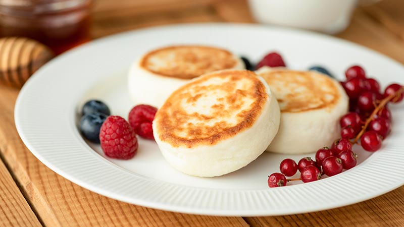
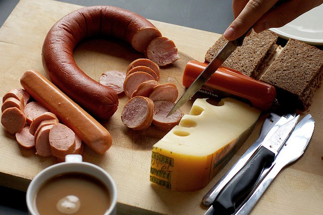
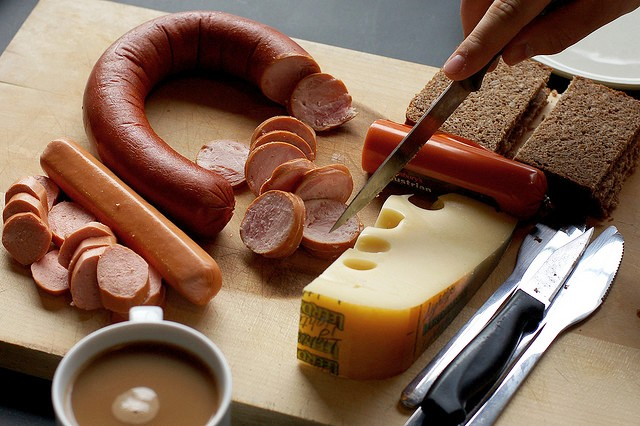

Paese che vai... Colazione che trovi!
Tre colazioni da non perdere!
Svizzera


I nostri vicini di casa svizzeri preferiscono colazioni veloci ma sfiziose come il tradizionale birchermüesli, una miscela di avena con frutta e noci. Di solito viene servita su yogurt denso!
Ucraina
In Ucraina la colazione è dominata dai pancakes Syrniki, soffici e buonissimi! Sono fatti con formaggio fresco contadino, detto ‘’tvorog’’ e aggiunta di farina. Si possono farcire con frutta fresca, conserve o zucchero a velo.
Germania
 

Le colazioni in Germania sono letteralmente leggendarie: una tipica colazione inizia con una bevanda calda come caffè, cappuccino, tè o cioccolata calda. Segue poi il pane (Brot) o i panini (Brötchen) con varie creme come burro, marmellate o miele. Spesso ci sono anche vari tipi di salumi, i würstel e altri formaggi.